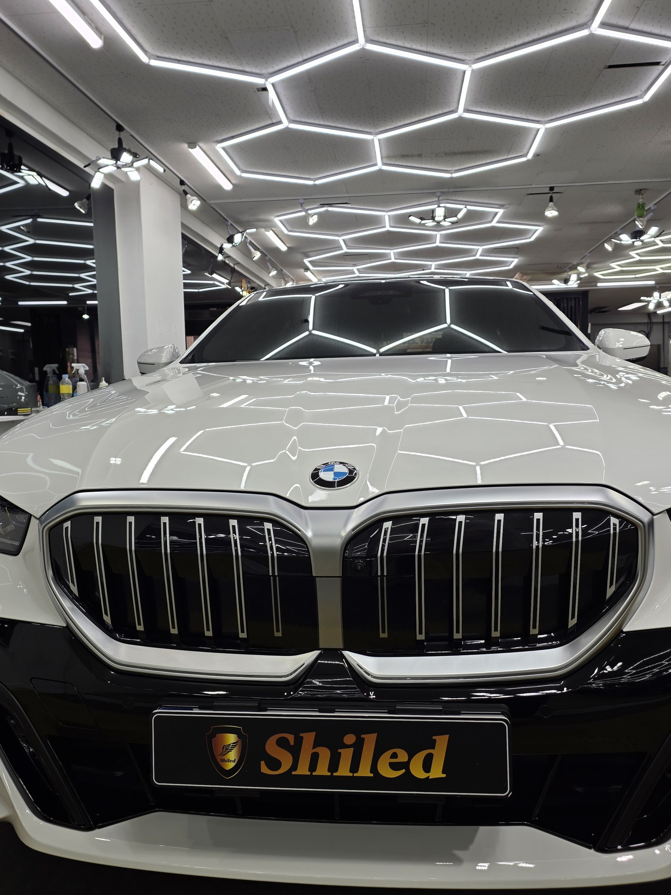
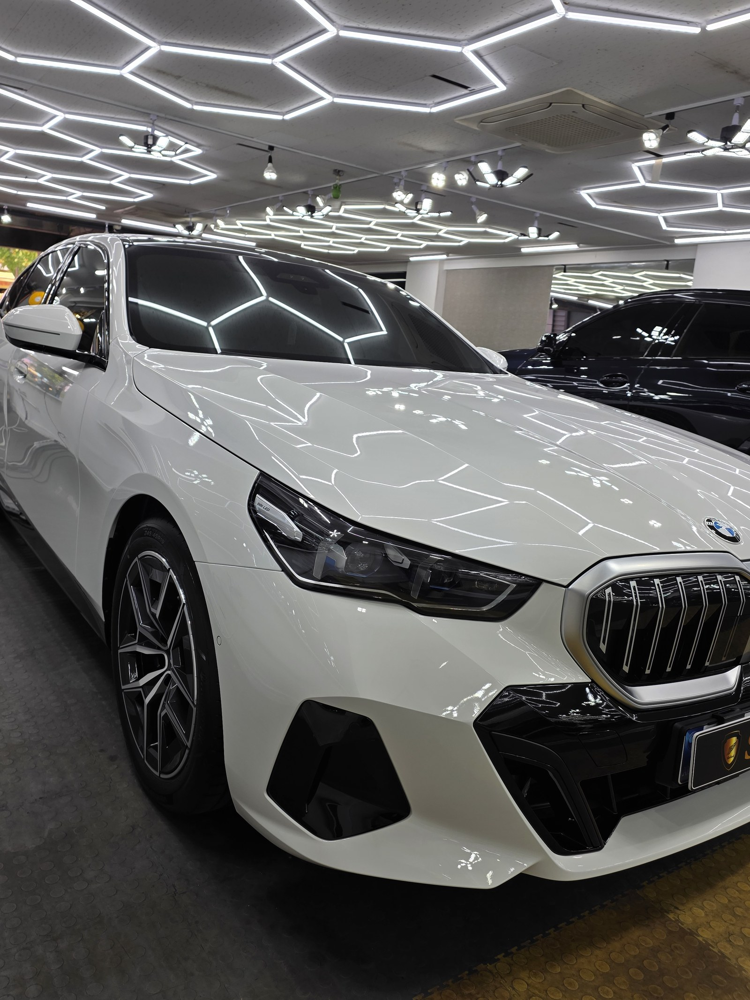
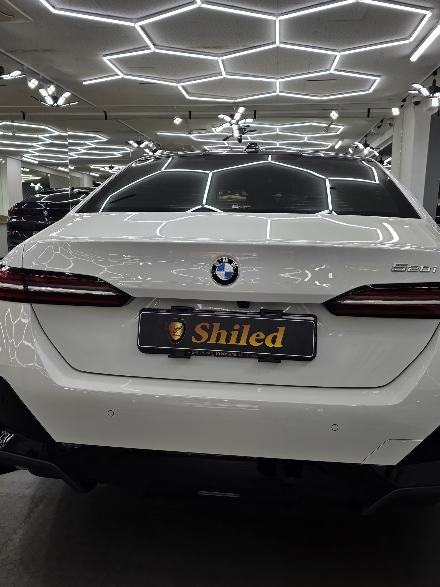
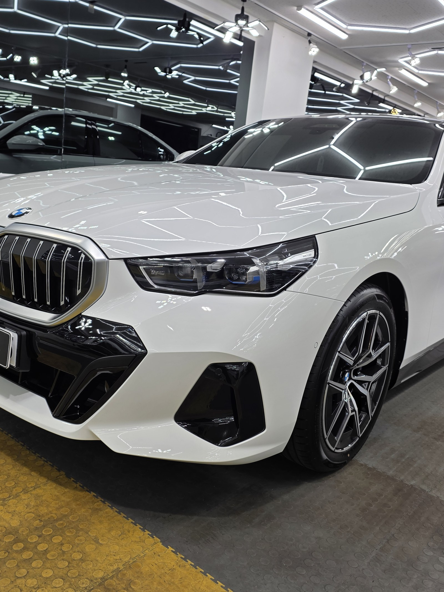
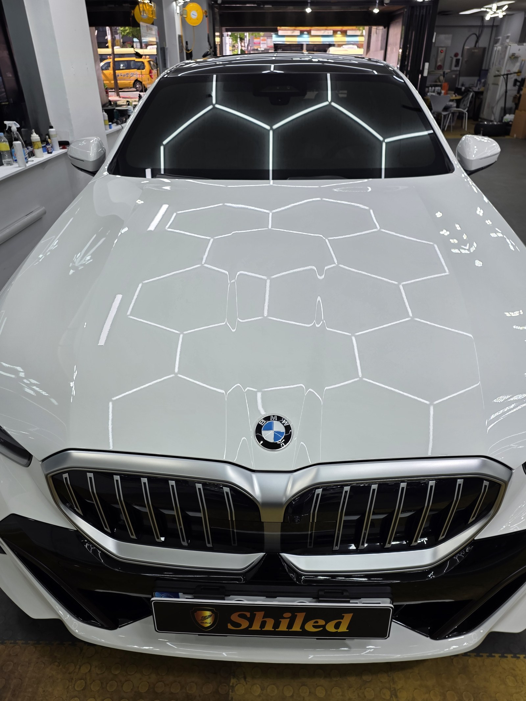
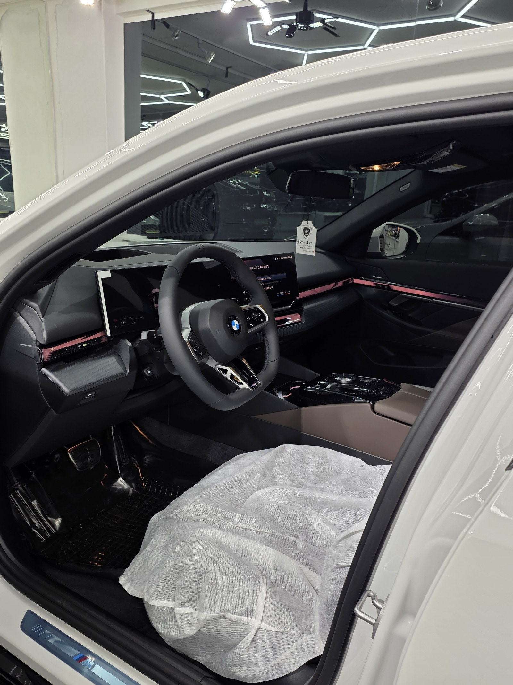
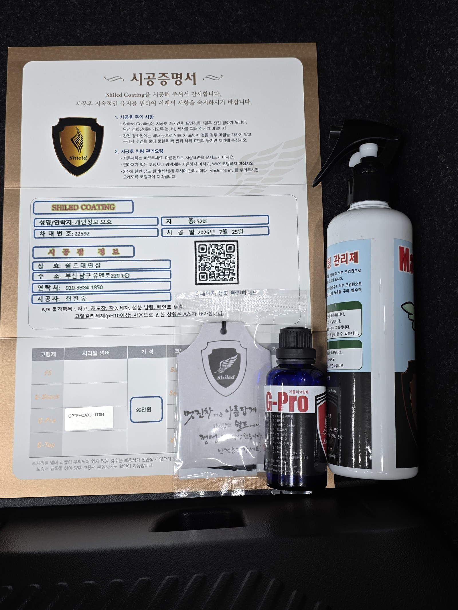

BMW 520i 백색입니다. 아직 출고 전, 새 차입니다.
이 차는 부산 유리막코팅으로 G-PRO 경도코팅을 올렸습니다.

왜 출고 전에 부산 유리막코팅을 받아야 하나
도장면이 가장 깨끗할 때 올리는 코팅이 가장 오래갑니다.
출고 후에는 운행과 세차로 미세한 잔기스와 오염이 쌓이기 시작합니다. 그게 쌓이기 전, 신차 상태 그대로일 때 코팅막을 입혀두는 겁니다. 그래서 쉴드광택은 부산 유리막코팅을 출고 전 단계에서 맡아 진행합니다.

백색 신차에 왜 F5가 아니라 G-PRO인가
코팅은 발색만 보고 고르는 게 아닙니다. 차주의 운행 습관과 우선순위에 맞춰야 합니다.
G-PRO는 저희 제품 중 경도가 가장 높은 하드코팅입니다. 스크래치 내성과 내구성에 특화돼 있습니다. 백색은 이미 발색보다 세척성과 표면 보호가 관건인 색상이라, 이 차주분도 화려한 발색보다 단단하게 오래 보호되는 쪽을 원하셨습니다. 그래서 F5가 아니라 G-PRO로 잡았습니다. 코팅제는 대표가 화학공학 전공으로 직접 개발·제조한 제품입니다.


기술자의 팁
백색은 잔기스가 눈에 잘 띄지 않는 색으로 알려져 있지만, 세차 흠집은 각도만 바뀌면 그대로 드러납니다. G-PRO로 경도를 잡아두면 세차 마찰로 인한 미세 스크래치 발생 자체를 줄일 수 있습니다.

외부만이 아니라 안까지
출고 전 차량은 안팎 컨디션을 함께 정리합니다.
실내는 아직 시트와 스티어링휠에 보호 비닐이 씌워진 신차 그대로입니다. 외부 도장은 G-PRO로 단단하게 잡고, 인도까지 이 상태 그대로 관리합니다.

시공증명서를 함께 드립니다
모든 시공 차량에 시공증명서를 드립니다.
차종·시공일·코팅제 시리얼 번호가 적혀 있고, 홈페이지에 등록해 보증을 받으실 수 있습니다. 이 차는 G-PRO 코팅으로 기록돼 있습니다.

차종·시공일·코팅제 시리얼이 기재된 시공증명서
자주 묻는 질문
Q. 새 차인데 왜 출고 전에 유리막코팅을 받아야 하나요?
A. 도장면이 가장 깨끗할 때 올리는 코팅이 가장 오래갑니다. 운행·세차로 잔기스와 오염이 쌓이기 전, 신차 상태 그대로일 때 코팅막을 입혀두면 처음 컨디션을 더 오래 지킵니다.
Q. G-PRO는 어떤 코팅제인가요?
A. 저희 제품 중 경도가 가장 높은 하드코팅입니다. 스크래치 내성과 내구성에 특화돼 있습니다. 화려한 발색보다 단단하게 오래 보호되는 쪽을 원하는 차주에게 맞는 코팅입니다.
Q. 신차코팅도 전처리를 하나요?
A. 합니다. 신차라도 운송·보관 중 미세 오염이 묻습니다. 디테일링 세차와 탈지로 표면을 정리한 뒤 코팅을 올려야 제대로 밀착합니다.
Q. 쉴드광택 위치와 예약은 어떻게 하나요?
A. 부산 남구 유엔로220 1F 쉴드광택입니다. 예약·상담은 010-3384-1850, 대표 최한중이 직접 상담하고 책임 시공합니다.
제품을 직접 만드는 사람이 직접 시공합니다.
부산에서 유리막코팅·광택을 고민 중이시면 편하게 연락 주십시오.
어떤 차를 타냐보다 어떻게 타냐가 중요합니다~!
시공 중에는 전화를 받지 못할 때가 많습니다.
카카오톡으로 차종과 원하시는 시공을 남겨주시면 확인 후 답변드립니다.
쉴드광택 · 부산 남구 유엔로220 1F · 대표 최한중